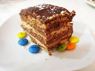

Tiramisú

En un bol se prepara la crema para el tiramisú: se mezcla el queso mascarpone con las yemas de huevo y el azúcar. Aparte, se baten las claras de huevo a punto de nieve. Finalmente, se incorporan las claras al bol del mascarpone. Se bate con cuidado, con las varillas, realizando movimientos envolventes, para no perder el aire de las claras montadas, (como haciendo una mousse). En una bandeja honda, montamos el postre, para ello, vamos colocando capas de bizcochos duros (soletilla) y los mojamos con café. Sobre una capa de bizcochos mojados en café, ponemos una capa de crema de mascarpone, después otra de bizcochos, otra de crema... etc. Sube los niveles que quieras, hasta terminar con una capa de crema. Tamiza sobre la última capa un poco de chocolate amargo en polvo. El tiramisú es un postre que debe estar en la nevera unas horas.
Prepare the cream for the tiramisu in a bowl: mix the mascarpone cheese with the egg yolks egg and the sugar. Separately, beat the egg whites until stiff. Finally I know incorporate the clear to the bowl of the mascarpone. It is beaten carefully, with the rods, making movements enveloping, so as not to lose the air of the whipped whites, (like making a mousse). In a deep tray, we assemble the dessert, for this, we are placing layers of biscuits hard (soletilla) and wet them with coffee. On a layer of biscuits soaked in coffee, we put a layer of mascarpone cream, then another of biscuits, another of cream... etc. Level up you you want, until finishing with a layer of cream. Sift over the last layer some dark chocolate powder. Tiramisu is a dessert what should stay in the fridge for a few hours.
Tarta de chocolate
Preparamos un chocolate a la taza bien espeso: en una cazuela echamos un poco de agua y el chocolate de hacer, cuando se haya derretido, añadimos leche (reservando como un vaso y medio), seguimos removiendo hasta que cueza, luego aflojamos el fuego y continuamos removiendo y añadiendo colacao, hasta conseguir un chocolate muy espeso. Dejamos enfriando (y espesando) el chocolate. Calentamos el resto de la leche y echamos un poco de cacao soluble. Ahora solo hay que ir montando la tarta, mojando las galletas en la leche y colocándolas en el molde para hacer una base, después colocamos una capa de chocolate, otra de galletas.
Prepare a very thick hot chocolate: in a saucepan add a little water and the chocolate to do, when it has melted, add milk (reserving as a glass and a half), we continue stirring until cooked, then we loosen the heat and continue stirring and adding Colacao, until you get a very thick chocolate. Let the chocolate cool (and thicken). Heat the rest of the milk and add a little of soluble cocoa. Now all you have to do is assemble the cake, dip the cookies in the milk and place them in mold to make a base, then we put a layer of chocolate, another of cookies.
Tarta de manzana

Sobre una bandeja de horno se coloca un papel para hornear (o se unta la bandeja del horno con mantequilla), colocamos el hojaldre doblado por los bordes a modo de caja, como de 1 ó 2 centímetros de alto, para contener la crema pastelera y dar forma a la tarta de manzana. Preparamos una crema pastelera, con leche, canela, 4 yemas de huevo, 100 gr de azúcar glass y una cucharada de maizena. Poner en la cazuela la leche con la canela. Aparte, mezclar en un bol las yemas, el azúcar y la maizena. Cuando la leche vaya a hervir, añadir la mezcla de yemas del bol. dejar cocer unos minutos a fuego lento sin dejar de remover hasta que espese. Vertemos la masa pastelera sobre la masa de hojaldre que habíamos colocado en la bandeja. Pelamos y partimos las manzanas en finas rodajas y las vamos colocando por encima de la crema de la tarta hasta que quede totalmente cubierta. Cubrimos con una fina capa de mermelada y horneamos a 180º durante 25 minutos aproximadamente.
Place baking paper on a baking tray (or grease the baking tray with butter), place the puff pastry folded around the edges like a box, about 1 or 2 centimeters high, to contain the pastry cream and shape the apple pie. Prepare a pastry cream, with milk, cinnamon, 4 egg yolks, 100 gr of icing sugar and one tablespoon of cornstarch Put the milk with the cinnamon in the casserole. Separately, mix in a bowl the yolks, sugar and cornstarch. When the milk is about to boil, add the egg yolk mixture bowl. Let it cook for a few minutes over low heat, stirring constantly, until it thickens. Pour the pastry dough over the puff pastry that we had placed on the tray. We peel and We cut the apples into thin slices and place them on top of the cream of the cake until it is completely covered. Cover with a thin layer of jam and bake at 180º for 25 minutes. about.
Crema Catalana

Poner a fuego suave en una cazuela 2 tazas de leche. Batir en un bol las cuatro yemas de huevo, a los que se añaden 3 cucharadas de azúcar (reservando dos) y una cucharada de maizena. Remover con las barillas hasta conseguir una crema sin grumos. Ésta mezcla se añade poco a poco a la leche, y subimos el fuego para hervir, durante 5 minutos sin dejar de mover. La crema catalana se sirve en boles o platos individuales, a los cuales se les echa azúcar por encima y se quema para crear una costra de caramelo. Se sirve caliente.
Put 2 cups of milk in a saucepan over low heat. In a bowl, beat the four egg yolks egg to to which 3 tablespoons of sugar are added (reserving two) and a tablespoon of cornstarch. stir with the bars until you get a cream without lumps. This mixture is added little by little to the milk, and we raise the heat to boil, for 5 minutes without stop moving. Catalan cream is served in individual bowls or plates, to which sugar is added by on top and seared to create a caramel crust. It is served hot.